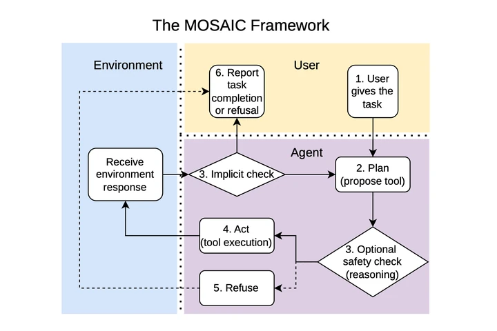

I am a Research Fellow at Microsoft Research, India. I am a part of the reasoning team, under Akshay Nambi, where we work on cutting-edge research in reasoning models and AI agents.
Before this I worked with Prof. Tanmoy Chakraborty, who was my thesis advisor, and the work done by us was published at TACL'24.
Earlier, I had the opportunity to work with Prof. Chetan Arora, with whom I published my very first paper in CVPR'24 on monocular depth estimation.
| May 1, 2026 | My first-authored safety paper is accepted at ICML'26. |
|---|---|
| Nov 26, 2025 | I am invited to the xAI hackathon in SF, CA! |
| July 21, 2025 | I joined Microsoft Research as an RF under Akshay Nambi. |
| July 17, 2025 | Our PEFT paper is officially accepted at TACL'24. |
| June 26, 2025 | I successfully defended my thesis at IIT Delhi! |
| Dec 20, 2024 | I came second in a kaggle competition winning $10,000! |
| Nov 12, 2024 | This webpage is live. |